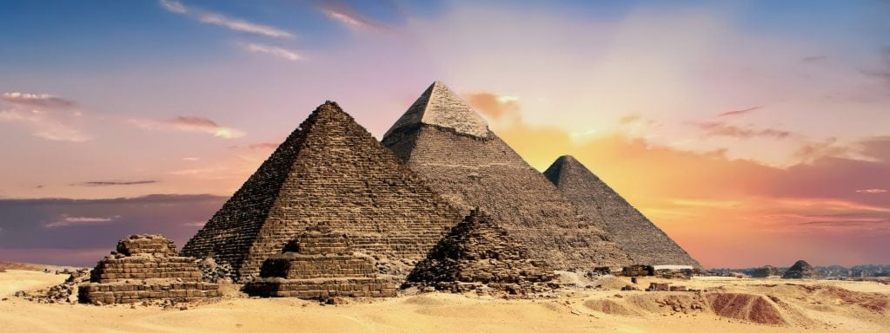
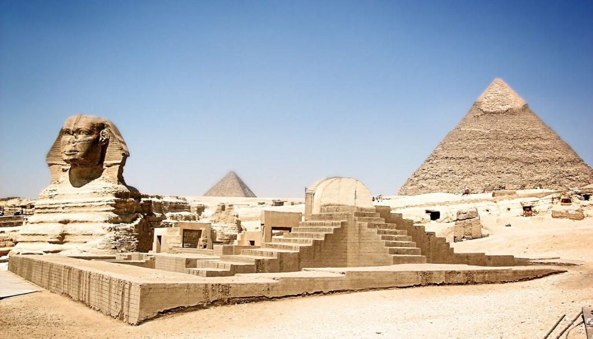
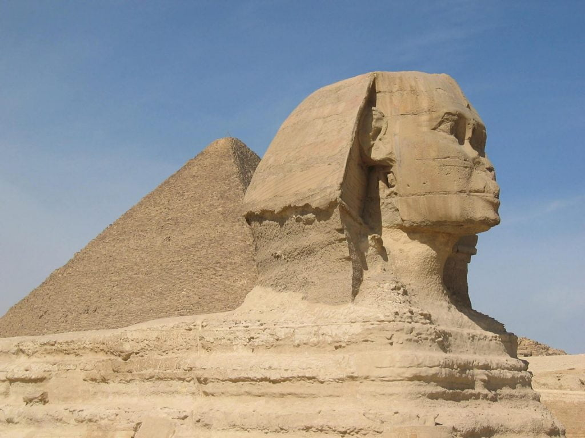
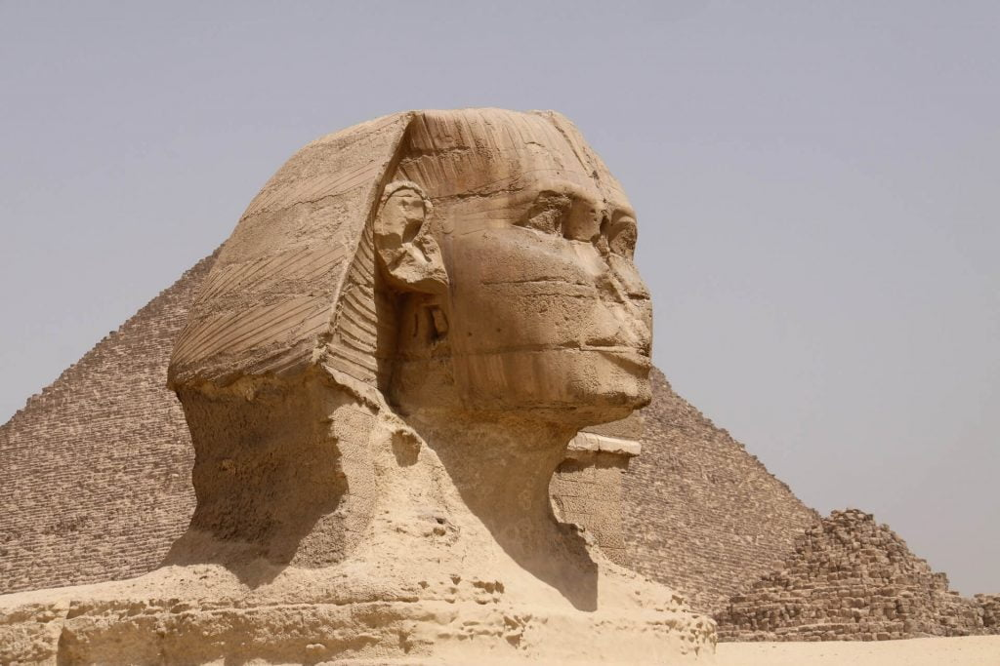

ဒီစဖင့်ရုပ်ကြီးကို နိုင်းမြစ် အနောက်ဖက် ကမ်းမှာရှိတဲ့ ဂီဇာမြို့ (the city of Giza) အနီးမှာ တည်ဆောက်ထားခြင်း ဖြစ်ပါတယ်။ ဒီအရုပ်ကြီးဟာ အီဂျစ်နိုင်ငံရဲ့ မြို့တော် ကိုင်ရို မြို့ (Cairo) ကနေဆို အနောက်တောင်ဖက် ယွန်းယွန်း ကီလို မီတာ ၂၀ (၁၂ မိုင်ခန့်) ပဲ ဝေးတဲ့ နေရာမှာ တည်ဆောက်ထားခဲ့တာ ဖြစ်ပါတယ်။
ဂီဇာအရပ်က စဖင့်ရုပ်ကြီး လို့ ဆိုလိုက်တာနဲ့ လူတွေရဲ့ အတွေးမှာ ရှေးဟောင်း အီဂျစ်ပြည်က ပိရမစ် ကြီးတွေ၊ မံမီကြီးတွေကို ပြေးမြင်ယောင်မိ ကြမှာပါ။ ရှေးဟောင်း ဒန္ဍာရီ ပုံပြင်တွေမှာ ပါလေ့ရှိတဲ့ ဒီအရုပ်ကြီးရဲ့ ကိုယ်ခန္ဒာက လဲလျောင်းနေတဲ့ ခြင်္သေ့ပုံ ထွင်းထုထားတာ ဖြစ်ပြီး ခေါင်းကတော့ လူခေါင်းပုံ ဖြစ်ပါတယ်။ တိတိကျကျ ပြောရရင် အီဂျစ် ခေတ်ဟောင်းနိုင်ငံတော်ခေတ်က ကာဖရာ ဘုရင်ကြီး (King Khafra of the Old Kingdom of Egypt) ရဲ့ပုံ ဖြစ်ပါတယ်။ ဒီဘုရင်ကြီးဟာ အီဂျစ်မင်းဆက်ရဲ့ စတုတ္ထ မင်းဆက်က (4th Dynasty) ဘုရင်တစ်ပါး ဖြစ်ပါတယ်။ ရှေးဟောင်း အီဂျစ်လူမျိုးတွေကတော့ ဒီအရုပ်ကြီးကို “သက်ရှိရုပ်တု” (shesep ankh) လို့ ခေါ်ကြပါတယ်။

ရှေး အီဂျစ်ခေတ်ကတော့ ဒီအရုပ်ကြီးကို အရောင်တောက်တောက်တွေနဲ့ ဆေးချယ်ထားခဲ့ ကြပါတယ်။ မျက်နှာ နဲ့ ကိုယ်ထည်ကို အနီရောင် ချယ်ခဲ့ပြီး ခေါင်းဆောင်းကိုတော့ အဝါနဲ့ အပြာရောင် အစင်းကြား ချယ်ထားခဲ့တာပါ။
အီဂျစ်ရှေးဟောင်း ပညာရှင်တွေ ကြားမှာ နောက်ထပ် သီအိုရီ တစ်ခုကတော့ ဒီစဖင့်ရုပ်ကြီးရဲ့ မျက်နှာက မူလတုန်းက လူမျက်နှာ မဟုတ်ပဲ အီဂျစ် နတ်ဘုရား အနုဘီ (Anubis) ရဲ့ မျက်နှာဖြစ်တယ်လို့ ဆိုပါတယ်။ (မှတ်ချက်။ အနုဘီ နတ်ဘုရားမှာ သင်္ချိုင်းဂူများအား စောင့်ရှောက်သည်ဟု ယုံကြည်ကြပြီး ခေါင်းမှာ ခွေအ ခေါင်းနှင့် ဖြစ်ပါတယ်။) နောက်ပိုင်းကျမှ လူမျက်နှာနဲ့ ပြောင်းလဲ အစားထိုး ထုလုပ်ခဲ့တာလို့ ဆိုပါတယ်။

Sphinx ဆိုတာဘယ်လို အကောင်မျိုးလဲ
ဒီ စဖင့် ဆိုတဲ့ ရှေးဟောင်း ဒန္ဍာရီ လာ အကောင်ကို အီဂျစ်တင် မကပဲ ဒီ မြေထဲ ပင်လယ် ဒေသ ပတ်ဝန်းကျင်က လူ့အဖွဲ့အစည်းတွေရဲ့ ရှေးဟောင်း ဒန္ဍာရီ ပုံပြင်တွေမှာ မကြာခဏ တွေ့ရတတ်ပါတယ်။ ဒီ Sphinx ဆိုတာက အီဂျစ်လို အခေါ်အဝေါ် မဟုတ် ပါဘူး။ ဂရိ အမည် ဖြစ်ပါတယ်။ယခုထိ ရှေးအီဂျစ်ခေတ်က ဒီအကောင်တွေကို ဘယ်လို ခေါ်ခဲ့လဲ ဆိုတာ မသိရ သေးပါဘူး။ ရှေးဂရိ ဘာသာစကားမှာ Sphinx ဆိုတာက “လည်ပင်းညှစ်သူ” လို့ အဓိပ္ပါယ် ရပါတယ်။ ရှေးဂရိ ဒန္ဍာရီ တွေမှာတော့ ဒီစဖင့်တွေဟာ ပဟေဠိတွေကို မေးလေ့ရှိပြီး မဖြေနိုင်တဲ့ သူတွေဆို သတ်ဖြတ်ပစ်လေ့ ရှိပါတယ်။ အာရပ် ဘာသာမှာတော့ ဒီအကောင်ကို “Abu Al Hol” လို့ ခေါ်ပါတယ်။ အဓိပ္ပါယ်က “ကြောက်မက်ဖွယ် အားလုံး၏ ဖခင်” လို့ အဓိပ္ပါယ် ရပါတယ်။ Sphinx ဆိုတဲ့ စကားက ရှေးအီဂျစ်ကနေ ဂရိတွေဆီ ရောက်လာတယ်လို့ အချို့က ယူဆပေမယ့် ဒါလဲ သက်သေ မရှိပါဘူး။
အရှေ့အလယ်ပိုင်း ဒေသက ရှေး လူ့အဖွဲ့အစည်း အများစုဟာ ခြင်္သေ့ကို နေနတ်ဘုရားရဲ့ သင်္ကေတ အနေနဲ့ သတ်မှတ်ကြပါတယ်။ ရှေးအီဂျစ်တွေကလဲ သူတို့ရဲ့ ဖာရိုဘုရင်တွေကို ရန်သူတွေကို အောင်မြင်စွာ သုတ်သင်ရှင်းလင်းနိုင်သော ခြင်္သေ့ကဲ့သို့ ရဲရင့်သူလို့ တင်စားပြောဆိုလေ့ ရှိကြပါတယ်။ ဒါ့ကြောင့် ဒီ လူခြင်္သေ့ကြီးဟာ သူတို့ရဲ့ ဖာရိုဘုရင်တွေ ထာဝရ လဲလျောင်းရာ ဂူသင်္ချိုင်းကို စောင့်ရှောက်လိမ့်မယ် ဆိုတဲ့ အယူနဲ့ ထုလုပ်ခဲ့တာလို့လဲ အချို့က ယူဆကြပါတယ်။

စဖင့်ရုပ်ကြီး၏ လှို့ဝှက်ခန်း
ဒီစဖင့်ရုပ်ကြီးရဲ့ အောက်မှာ ဖုံးကွယ်ထားတဲ့ လှို့ဝှက်ခန်းတစ်ခန်း ရှိတယ်လို့ ဆိုပါတယ်။ ရှေးယခင်ကတဲက ဒီ စဖင့်ရုပ်ကြီးရဲ့ အတွင်းထဲမှာ ဖြစ်စေ၊ သို့မဟုတ် အောက်မှာဖြစ်စေ လှို့ဝှက်အခန်း တစ်ခု (သို့) တစ်ခုမက ရှိလိမ့်မယ်လို့ ယုံကြည်ခဲ့ကြ ပါတယ်။ ဒီလို ယူဆခဲ့ကြတဲ့ အကြောင်းရင်းကတော့ ရှေးကျမ်းစာတွေမှာ “သော့နတ်ဘုရား၏ ဘုရားကျောင်း (The Temples of Thoth)” အကြောင်း ဖော်ပြထားခဲ့ ကြလို့ပါ။ ဒီဘုရားကျောင်းထဲမှာ ရှေးခေတ်ဟောင်းရဲ့ အသိပညာတွေကို သိမ်းဆည်းထားတယ်လို့ ဆိုပါတယ်။ရောမတွေနဲ့ အာရပ်တွေဟာ ဒီစဖင့်ရုပ်ကြီး အောက်မှာ ရှိတယ်လို့ ယုံကြည်ရတဲ့ လှို့ဝှက်ခန်းကို ရှာဖို့ ကြိုးစားခဲ့ ကြပေမယ့်လဲ အောင်မြင်မှု ရခဲ့တယ်လို့ မကြားခဲ့ရပါဘူး။
၁၉၈၀ ပြည့်လွန်နှစ်တွေက ပြုလုပ်ခဲ့တဲ့ ရှေးဟောင်းသုတေသန တူးဖော်မှု မှာတော့ မြောက်ဖက်ခြမ်းမှာ လှိုင်ခေါင်းတစ်ခုကို တွေ့ရှိခဲ့ပါတယ်။ ဒါပေမယ့် ဒီလှိုင်ခေါင်းကို ဆက်လက် တူးဖော်ရာမှာတော့ အခန်းလွတ်လေး တစ်ခုကိုပဲ တွေ့ရှိခဲ့ ရပါတယ်။ အခုထက်ထိတော့ ဒီ စဖင့်ရုပ်ကြီးရဲ့ အောက်က လှို့ဝှက်ခန်းဟာ တကယ်ရှိတယ်ဆိုတဲ့ အထောက်အထား ရှာမတွေ့ သေးပါဘူး။ အခုထက်ထိ ဒီအခန်းက ယုံတမ်း ပုံပြင်တစ်ခုလိုပဲ ဖြစ်နေပါတယ်။
၁၈၁၆ ခုနှစ်နဲ့ ၁၈၁၈ ခုနှစ်တွေ ကြားမှာ ဗိုလ်ကြီး ဂျီယိုဗန်နီ ဘာတစ္စတာ ကာဗီဂလီယာ (Captain Giovanni Battista Caviglia) ကို ဒီ စဖင့်ရုပ်ကြီးကို တူးဖော်ဖို့ တာဝန်ပေးခဲ့ပါတယ်။ ဒီအရုပ်ကြီးက နာမည်ကျော် ဂီဇာ ပိရမစ်ကြီးနဲ့ နီးကပ်စွာ တည်ရှိနေတာမို့ သူ့ကို တည်ဆောက်သူကိုလဲ ကာဖရာ ဘုရင်လို့ပဲ ယူဆထားခဲ့ ကြပါတယ်။ အခုထိလဲ ဒီ ယူဆချက်ကို ဆောဒက တက်တဲ့သူ မရှိသလောက်ပဲဖြစ်ပါတယ်။ အများစုက ဒီ စဖင့်ရုပ်ကြီးရဲ့ ပုံကိုတောင် ကာဖရာ ဘုရင်ကြီးရဲ့ ပုံလို့ ပြောကြပါတယ်။

ဒီစဖင့်ရုပ်ကြီးမှာ နို့မပါတာနဲ့ ပါတ်သက်လို့ အမျိုးမျိုး ပြောကြပါတယ်။ အဓိက လူပြောအများဆုံးကတော့ နပိုလီယန်က သူ့စစ်သားတွေကို ဒီအရုပ်ကြီးရဲ့ နှာခေါင်းကို ဖျက်ဆီးခိုင်းခဲ့တယ် ဆိုတာပါပဲ။ ဒါပေမယ့် ၁၇၃၈ ခုနှစ်မှာ ဒိန်းမတ် ပန်းချီဆရာ ဖရက်ဒရစ် လူးဝစ် နော်ဒန် (Frederic Louis Norden) ဆွဲတဲ့ ပုံမှာကတဲ က နှာခေါင်း မရှိတော့ပါဘူး။ နပိုလီယန်ဟာ ၁၇၆၉ မှ မွေးတာမို့ သူမမွေးခင်ကတဲက နှာခေါင်း မရှိတော့တာပါ။
မူလက စဖင့်ရုပ်ကြီးမှာ မုတ်ဆိတ်မွှေး ပါရှိပါတယ်။ ဒါဟာ မင်းမျိုးမင်းနွယ် ဆိုတာကို ပြဆိုတာပါ။ ဒါပေမယ့် အဲ့သည် မုတ်ဆိတ်မွှေး ကြီးက ပြုတ်ကျသွားတာ ကြာခဲ့ပါပြီ။ အဲအချိန်က ပြုတ်ကျနေတဲ့ မုတ်ဆိတ်မွှေးရဲ့ အစိတ်အပိုင်း တစ်ခုကို ယခုအခါ ဗြိတိသျှ ပြတိုက် (British Museum) မှာ ပြသထားတာကို လေ့လာနိုင်ပါတယ်။
Reference: Grate Sphinx of Giza